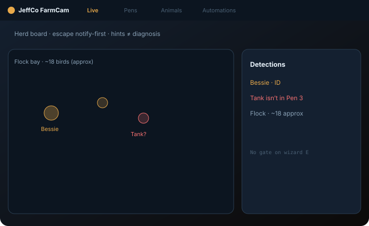
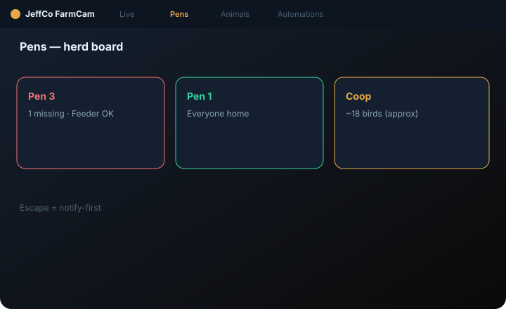
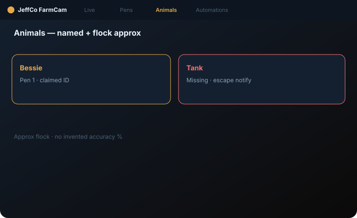

FarmCam
Barn/paddock herd board — animals, pens, notify-first escape/downer — not dairy SaaS theater.
For ranch and barn operators who want nicknames and a serious gate story — fun wraps guardrails.

What it does
FarmCam is a herd ops console: Live feed with alerts strip, Animals CRM with nicknames, Pens enclosure board, and English automations.
Wizard finale is exclusive Notify me or feeder — no gate tile on Step E. Escape defaults to notify-first; auto gate close only via Advanced with a full safety pack (multi-confirm + person/vehicle veto).
Behavior and birth events are notify + clip only — never diagnosis and never auto medical or slaughter actions. Fun lands on “everyone home”; seriousness lands on escape, downer, and gate.
Capabilities
Day-one surface vs Advanced / gated — from Clarity GH Pages pack.
Day-one surface
Live
Day oneHerd view + alerts strip
Animals
Day oneNicknames / profiles
Pens
Day oneEnclosure board
Automations
Day oneNotify / feeder (gate Advanced)
Advanced / gated
Gate automations
AdvancedNotify-first + multi-confirm + person/vehicle veto
Medical/diagnosis language
OutForbidden as claims
How to use it
First-run (wizard)
Add a feed
barn/paddock cam or Practice feed.
Draw pens
enclosure regions on the board.
Catch animal / presence proof
Continue locked until proof.
Optional ID/sensor
skip freely if not ready.
Step E:
Notify me or feeder only (dry-run); no gate option in the wizard.
Add feed
—
Draw pens
—
Catch animal / presence proof
—
Optional ID/sensor
—
Step E
Notify me or feeder only (dry-run); no gate.
Daily loop
Live herd scan
escape/downer badges first
Animals CRM
nicknames, attention, timelines
Pens integrity
fence/gate geometry still honest
Automations after dry-run; open Advanced only when deliberately arming a gate pack
—
Activity: escape/downer, actuator fails
not sleeping workers
Live herd scan
Escape/downer badges first.
Animals CRM
Nicknames / attention.
Pens integrity
—
Automations after dry-run
Gate only in Advanced.
Activity
Escape/downer, actuator fails.
Honesty / trust
Hints ≠ diagnosis; escape notify-first; no gate on wizard E.
- Hints ≠ diagnosis — behavior/birth notify + clip only.
- Escape = notify first — never auto gate-slam from wizard defaults.
- Gate = Advanced + safety pack only.
- No auto medical/slaughter actions.
- Fun on “everyone home”; serious on escape/downer/gate.
- Dry-run ≠ live feeder pulse until armed.
Screenshots
Domain frames elevated from Design UI mocks + Clarity captions.


Get started
Clone jeffco-farmcam-module · read docs · open setup wizard.